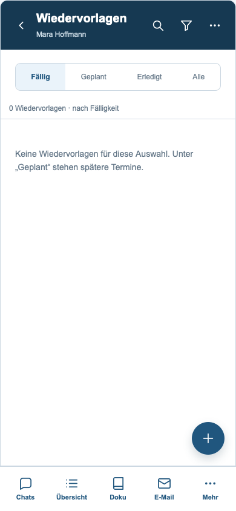
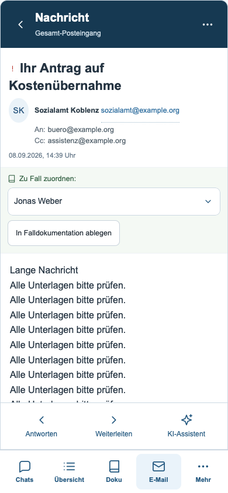
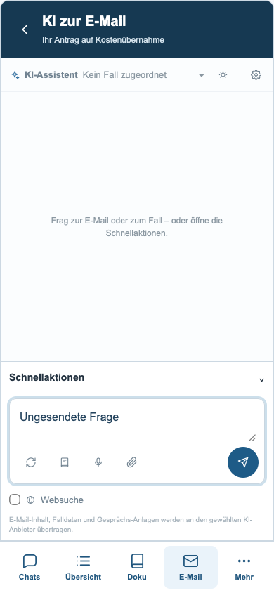
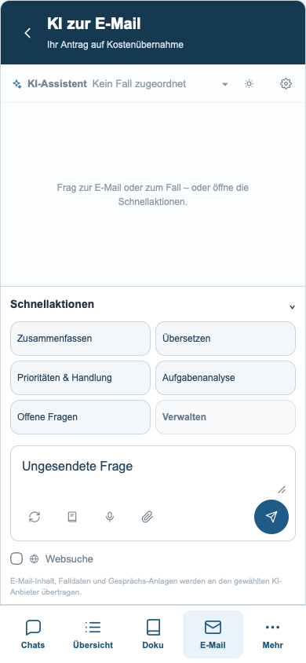
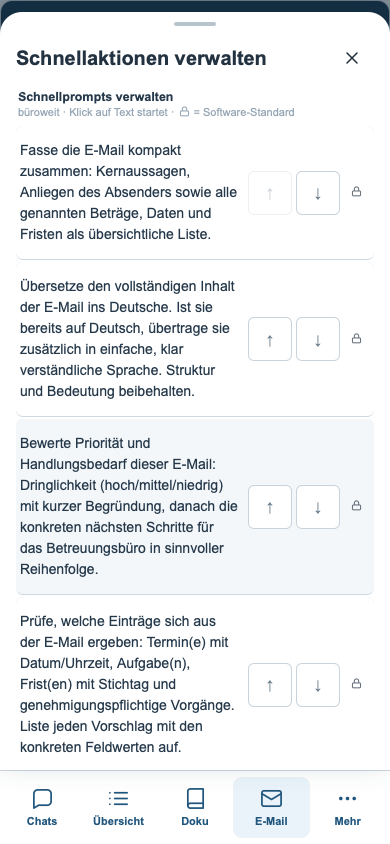
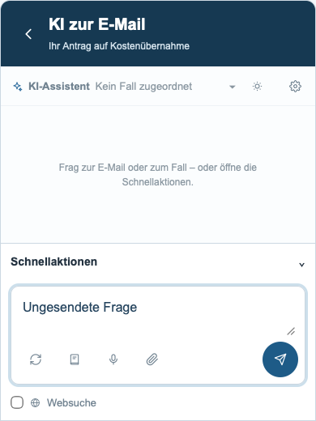
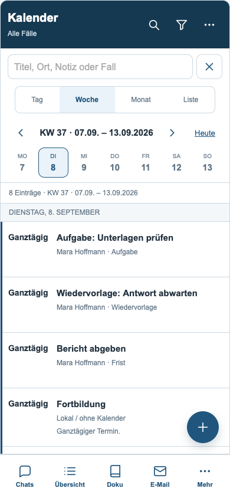
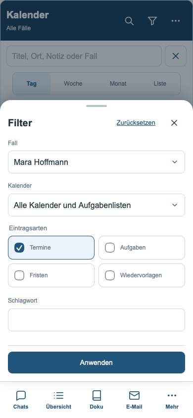
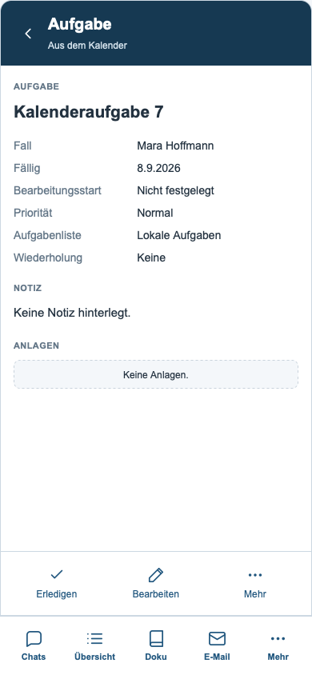

Zurück zur Übersicht
Der Kopf-Zurückpfeil führt aus der Wiedervorlagenliste wieder zur Fallübersicht.

Mail: feste Aktionen
Antworten, Weiterleiten und KI-Assistent bleiben am unteren Rand erreichbar.

KI zur aktuellen E-Mail
Eine eigene Ansicht bietet Platz für Verlauf und Eingabe. Zurück führt an die vorherige Stelle der Mail.

Geordnete KI-Schnellaktionen
Verständliche Namen in zwei Spalten, Werkzeugzeile unter der Eingabe, Senden rechts.

Alle Schnellaktionen verwalten
Die vollständige Verwaltung öffnet in einem mobilen Blatt.

Eingabe bei Bildschirmtastatur
Simulierter sichtbarer Bereich: Navigation ausgeblendet, Eingabe und Senden bleiben erreichbar.

Kalender mit KW
Die Wochenüberschrift enthält die ISO-Kalenderwoche.

Eintragsarten kombinieren
Termine, Aufgaben, Fristen und Wiedervorlagen sind unabhängig auswählbar.

Details aus dem Kalender
Zuerst Details, danach ausdrücklich Bearbeiten. Der Rückweg bleibt im Kalender.
